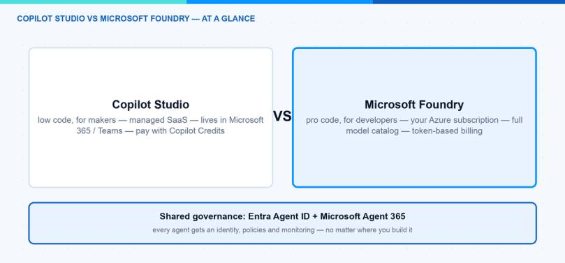
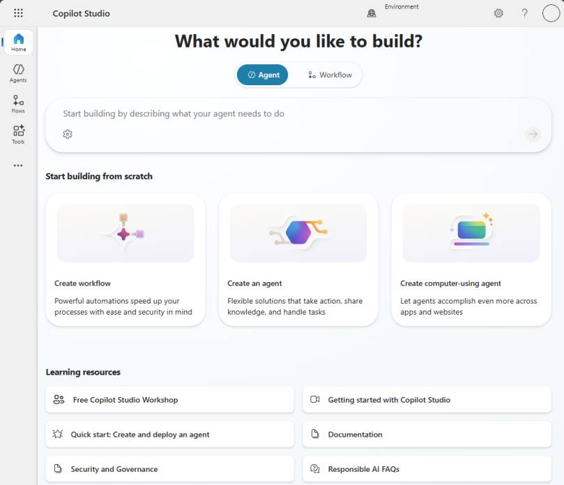
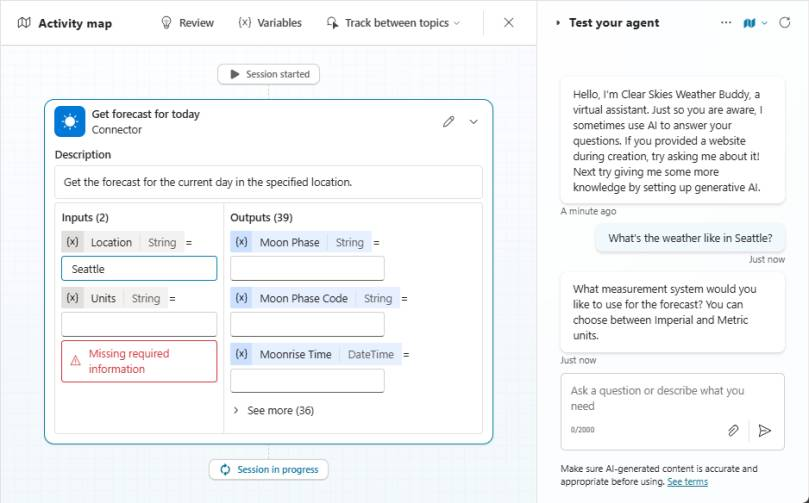
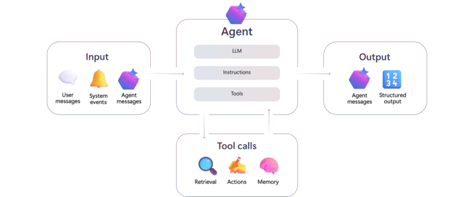
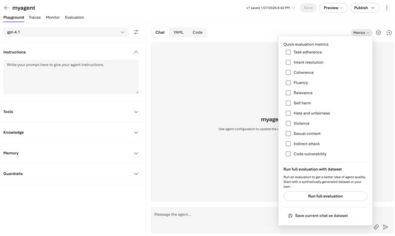
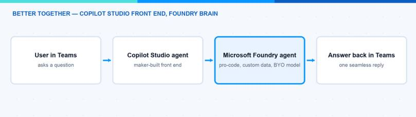

Many companies want to build AI agents right now, and the first question I get is always the same: Foundry vs Copilot Studio — which one should we use? Both platforms overlap in some areas, and the docs do not make the decision easy. In this blog post I go deep: I explain how both platforms actually work under the hood, compare models, hosting, pricing, and governance, and I am honest about quality — because that is where many Copilot Studio projects struggle. I also explain why, in the age of AI-assisted coding, the “full code” platform Foundry is often the faster way to a working agent. At the end you should know which platform fits your scenario — or if you should use both together.
Note: Azure AI Foundry was renamed to Microsoft Foundry at Ignite 2025. You will still find both names in older docs. In this post I use Microsoft Foundry, including the Foundry Agent Service.
Foundry vs Copilot Studio: What Is the Difference?
The short version: it is mostly about who builds the agent and where it runs.
Microsoft Copilot Studio is a low-code SaaS platform. Makers and IT admins build agents in a graphical designer, publish them to Microsoft Teams, Microsoft 365 Copilot, or a website, and Microsoft runs everything for you. You do not need an Azure subscription or any infrastructure.
Microsoft Foundry is the pro-code platform. Developers build agents with SDKs (Python, C#, TypeScript) against the Foundry Agent Service. It runs in your Azure subscription, you pick the model, you control the orchestration, and you wire it into your own apps and pipelines.
Here is my Foundry vs Copilot Studio comparison at a glance:
| Copilot Studio | Microsoft Foundry | |
|---|---|---|
| Audience | Makers, IT admins, fusion teams (low-code) | Developers, data scientists (pro-code) |
| Models | Managed models, curated by Microsoft (BYO Foundry model possible) | Full catalog: OpenAI, Anthropic, Meta, Mistral, open source, fine-tuning |
| Hosting | Managed SaaS, no Azure subscription needed | Your Azure subscription, your region, your network rules |
| Pricing | Copilot Credits: prepaid packs or pay-as-you-go | Consumption: model tokens plus tool charges |
| Governance | Entra Agent ID, Agent 365 registry, Power Platform admin controls | Entra Agent ID, Agent 365 registry, Azure RBAC and policies |
| Quality tooling | Manual test panel, activity map | Evaluations, tracing, versioning, agent optimizer |
| Best for | Teams/M365 agents, helpdesk, HR, fast time to value | Custom apps, own data and models, quality-critical agents |

How Does Copilot Studio Work?
Let us look under the hood of Copilot Studio first, because the platform decides a lot for you — and you should know what exactly it decides.
An agent in Copilot Studio is a combination of building blocks: instructions (a natural-language description of what the agent should do), knowledge sources (SharePoint, websites, Dataverse, documents), topics (pre-authored conversation flows), tools (connectors and agent flows that take actions), and triggers (events that start the agent without a user asking). You configure all of this in the browser — no code, no deployment pipeline.

Image: Microsoft Learn — you start by describing your agent in plain language, and Copilot Studio scaffolds it for you.
The most important concept is orchestration — how the agent decides what to do with a user message. Copilot Studio has two modes:
- Classic orchestration: the agent matches the user’s message against trigger phrases and starts the one topic that matches best. Everything else — questions, answers, branching — you author as nodes in that topic. This is the old chatbot model: predictable, but rigid.
- Generative orchestration (the default for new agents): a language model reads the descriptions of your topics, tools, and knowledge sources and picks one or more of them to answer the query. It can chain topics together, fill tool inputs from the conversation context, ask for missing information automatically, and generate the final answer itself.
This is the key thing to understand about Copilot Studio: with generative orchestration, your descriptions are your programming model. The agent selects a tool because its name and description sound right for the user’s intent. If two tools have similar descriptions, the agent may pick the wrong one — Microsoft’s own orchestration guidance is essentially a style guide for writing better descriptions.
For actions, Copilot Studio gives you the Power Platform connector ecosystem (1,500+ connectors) plus agent flows — Power Automate-style workflows that an agent can call as a tool. Publishing is a few clicks: Teams, Microsoft 365 Copilot, a website widget, or other channels via Azure Bot Service.
For testing, you get a test panel with an activity map that shows which topic or tool the agent selected and which inputs it filled:

Image: Microsoft Learn — the activity map is your main debugging tool in Copilot Studio.
Hint: The activity map is genuinely useful, but it is a manual tool. You chat, you watch, you tweak descriptions. There is no built-in way to run 200 test questions against your agent and get a quality score. Keep that in mind for the quality section below.
How Does Microsoft Foundry Work?
Microsoft Foundry approaches the same problem from the developer side. The heart of it is the Foundry Agent Service, and every agent there is built from the same three components: a model from the Foundry catalog, instructions, and tools.

Image: Microsoft Learn — every Foundry agent is a model plus instructions plus tools, with inputs from users or system events.
Foundry gives you two agent types, depending on how much you want to own:
- Prompt agents: you define the agent as configuration — instructions, model, tools — either in the Foundry portal or via SDK/REST. Foundry runs it for you. No containers, no compute to manage. This is closer to Copilot Studio than most people think: you can build a useful prompt agent without writing orchestration code.
- Hosted agents: you write real agent code with a framework of your choice — Microsoft Agent Framework, LangGraph, the OpenAI Agents SDK, or your own code — package it, and Foundry hosts it with a managed endpoint, auto-scaling, a dedicated Entra identity, and observability.
Behind both sits the Responses API — one endpoint that gives any agent access to the models and the platform tools: file search, code interpreter, web search, memory, and MCP servers. You can even call the Responses API from agent code that runs completely outside of Foundry.
Creating a prompt agent from code looks like this:
# Create a prompt agent with the Foundry SDK (Python)
from azure.ai.projects import AIProjectClient
from azure.identity import DefaultAzureCredential
project = AIProjectClient(
endpoint="https://YOUR-RESOURCE.services.ai.azure.com/api/projects/YOUR-PROJECT",
credential=DefaultAzureCredential(),
)
agent = project.agents.create_agent(
model="gpt-4.1",
name="helpdesk-agent",
instructions="You answer IT questions for employees. Keep answers short.",
)
The part I like most is the development lifecycle around the agent. You test in the playground, you trace every model call and tool invocation, you run evaluations against datasets, and you publish a versioned agent to a stable endpoint. Quality checks are built into the portal — you can switch on metrics like task adherence, intent resolution, or groundedness directly in the playground:

Image: Microsoft Learn — evaluations are a first-class feature in Foundry, not an afterthought.
If you want to see this hands-on, I wrote two step-by-step posts: build your first agent in Microsoft Foundry and evaluate AI agents in Microsoft Foundry.
What About Models and Hosting?
The model story is where Foundry vs Copilot Studio differs the most.
In Copilot Studio, Microsoft manages the models for you. You get a curated set that Microsoft operates and updates. That is great for a helpdesk or HR agent — you never patch a model deployment. The trade-off: less choice and less tuning.
In Microsoft Foundry you get the full model catalog. OpenAI, Anthropic, Meta, Mistral, and many open-source models, plus fine-tuning on your own data. The agents run in your Azure subscription. You decide the region, you control the network rules, and the data stays where your architects want it. You can even swap the model under an agent without changing the agent code — useful when a better or cheaper model ships, which happens every few months now.
Hosting follows the same logic. Copilot Studio is a managed SaaS with deep Microsoft 365 integration — publishing an agent to Teams is a few clicks. Foundry gives you an Azure resource that you treat like any other workload: RBAC, private networking, monitoring, CI/CD.
What Do They Cost?
Pricing is the second big difference in Foundry vs Copilot Studio, and it alone decides many projects.
Copilot Studio bills in Copilot Credits. You either buy prepaid packs (25,000 credits for $200 per month at the time of writing) or you use pay-as-you-go with no upfront commitment. Different actions consume different amounts of credits. The good part: costs are predictable. The hard part: high volume can get expensive.
Hint: Since September 2025 the billing unit is called Copilot Credits instead of messages. The quantities and rates did not change — only the name. Do not be confused when older posts still say “message packs”.
Microsoft Foundry bills by consumption in your Azure subscription. There is no extra charge for the Foundry Agent Service itself — you pay for the model tokens you consume, plus separate charges for tools like Grounding with Bing Search or Logic Apps connectors (hosted agents add container compute). At low volume this is very cheap, but token spend is harder to predict, so you need proper cost monitoring.
How Does Governance Work for Both?
Good news here: governance is converging, and this makes the Foundry vs Copilot Studio decision easier than it was a year ago.
Both platforms plug into Microsoft Entra Agent ID. Copilot Studio can automatically create an Entra agent identity when a maker publishes an agent, and Foundry provisions one when you publish an agent from a project. Every agent gets its own identity that you can see in the Entra admin center and target with Conditional Access.
On top of that sits Microsoft Agent 365 with the agent registry in the Microsoft 365 admin center. It gives you one inventory of agents across both platforms, with risk signals from Entra, Defender, and Purview. I wrote about this in more detail in my post on Microsoft Agent 365 vs Microsoft 365 Agents, so I keep it short here.
For you as an IT pro this means: the governance story should not drive the platform choice anymore. Pick the platform by builder skills and workload, and govern both in one place.
What About Quality? My Honest Experience
Now the part that most comparisons skip, and the reason I rewrote this post: quality.
My honest experience is that Copilot Studio agents often do not meet the quality standards that the business expects. The demo looks great — you connect a SharePoint site, ask three questions, everyone is impressed. Then real users arrive with real questions, and the agent picks the wrong tool, misses the right document, or gives a confident answer that is only half correct. I have seen more than one Copilot Studio pilot quietly die this way.
This is not because the makers did a bad job. It is built into how the platform works:
- Routing depends on prose. With generative orchestration, the agent picks topics and tools based on their natural-language descriptions. That is fragile. Two similar descriptions and the agent calls the wrong one — and your only fix is rewording text and testing again by hand.
- You cannot see or tune the retrieval. How knowledge sources are chunked, indexed, and searched is managed for you. When answers are wrong, there is no ranking to adjust and no retrieval pipeline to debug.
- Testing is manual. The test panel and activity map are fine for spot checks, but there is no built-in way to run a large question set against the agent and measure quality systematically. You find regressions when users find them.
- Known limitations bite in production. No disambiguation between similar topics under generative orchestration, limited conversation history, no custom entities as tool inputs — each one is small, together they cap what the platform can reliably do.
Foundry is built for exactly this problem. Evaluations are a first-class feature: you run your agent against datasets and measure task adherence, groundedness, intent resolution, and more — automatically, on every change. Tracing shows every model call and tool decision. Versioning lets you roll back. You control the retrieval stack, the orchestration logic, and the model itself, and you can fine-tune or swap models when quality demands it.
So my rule of thumb is simple: when quality and flexibility are the requirement, Foundry is the better platform. Copilot Studio quality can be good enough — for FAQ-style agents with a narrow scope, curated knowledge, and well-written descriptions. But if the agent touches a critical process, faces customers, or needs to be measurably good, I would not build it in a tool that cannot measure it.
Can You Code? Then Foundry Is Often Faster
There is a second point most comparisons get wrong. The classic assumption is: low-code is fast, pro-code is slow. In 2026, with AI-assisted development, that assumption has flipped for many teams.
If you can code — or you are comfortable with vibe coding, letting GitHub Copilot or Claude write most of the code while you review and steer — a Foundry agent is often faster to build than the same agent in Copilot Studio:
- The scaffold is minutes, not days. An AI coding assistant generates a working Foundry agent — SDK calls, tools, error handling — from one prompt. Clicking the same logic together in a designer takes longer, and every iteration means more clicking.
- Code is text, and text is what AI is great at. You can ask your assistant to refactor the orchestration, add a tool, or write tests. There is no AI that clicks through the Copilot Studio designer for you.
- Code is versionable and reviewable. Git diff, pull request, CI/CD, automated evaluations on every change. Reproducing this loop with designer-built agents and solution exports is possible, but it is much more work.
- You never hit the ceiling. In Copilot Studio, the moment you need custom retrieval or special orchestration logic you leave the happy path. In code, the special case is just another function.
Note: This does not make Copilot Studio pointless. If the people who own the agent are makers and admins who do not code — not even with AI assistance — then the low-code designer is exactly right, because they can maintain the agent after go-live. The point is: do not choose Copilot Studio because you think code is slower. With today’s tooling, it usually is not.
When Should I Use Copilot Studio?
I would go with Copilot Studio when:
- The agent lives in Microsoft Teams or Microsoft 365 Copilot.
- Makers or IT admins build and maintain it — not a dev team.
- You want the 1,500+ Power Platform connectors out of the box.
- Time to value matters more than deep customization.
- Predictable, per-use pricing without an Azure subscription is a plus.
- The scope is narrow and “good enough” answers really are good enough.
Typical wins: IT helpdesk agents, HR onboarding, internal knowledge assistants. Honest limit: when you need custom orchestration logic, a specific model, or measurable answer quality, you will hit the ceiling of the low-code designer.
When Should I Use Microsoft Foundry?
I would go with Microsoft Foundry when:
- Developers build the agent and it lives in your own app or website — not in Microsoft 365.
- You need a specific model, fine-tuning, or a non-OpenAI model.
- You need full control: region, networking, RBAC, CI/CD.
- Quality is a requirement, not a hope — you want evaluations, tracing, and versioning built in.
- You build multi-agent workflows with complex orchestration.
- Token-based Azure billing fits your FinOps model better than credits.
Honest limit: Foundry needs developers, also after go-live. If nobody can debug Python when the agent misbehaves in production, do not start here — AI assistants help you write code, but someone still has to own it.
Can I Combine Them?
Yes, and this is my favorite part of the Foundry vs Copilot Studio story — it is not either-or.
Two integrations matter in practice. First, Copilot Studio can bring your own Foundry model: in a prompt, you simply select a model deployed in Microsoft Foundry. Second, a Copilot Studio agent can connect to a Microsoft Foundry agent (currently in preview) and hand over tasks to it. Foundry agents can also publish directly to Microsoft 365 Copilot and Teams.
So a common pattern is: Copilot Studio as the user-facing front end in Teams, built by makers — and Foundry agents doing the heavy, custom work behind it, built by developers. This also solves the quality problem elegantly: the fragile part (routing, retrieval, complex logic) moves into Foundry where you can evaluate and trace it, and Copilot Studio stays what it is good at — the friendly front door in Teams. Microsoft is clearly building towards this fusion-team model; you can see the direction in my summary of the Microsoft Build 2026 agentic stack.

What Would I Choose?
My simple rule for Foundry vs Copilot Studio: start where your builders are — but be honest about your quality bar.
If the people who own the agent are makers and admins, the agent lives in Microsoft 365, and the scope is a well-defined internal assistant, I choose Copilot Studio. If a dev team owns it, if it needs a specific model, or if quality and flexibility are hard requirements, I choose Microsoft Foundry — and if the team can code, even a little with AI assistance, Foundry is usually also the faster path, despite being the “full code” option. For bigger organizations I would plan for both from day one: Copilot Studio as the front door, Foundry for the custom brains, and Agent 365 with Entra Agent ID as the common governance layer.
The Foundry vs Copilot Studio question is less about “which is better” and more about “who builds it, where does it run, and how good does it have to be”. Once you answer that, the platform picks itself. I hope this is a little help.
Stay healthy, Cheers Jannik